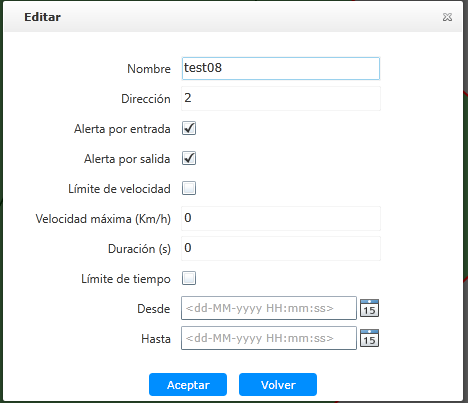

Editar propiedades de valla electrónica
Después de que el vehículo se agrega con éxito, su información básica se puede modificar.
|
1. |
Seleccione una valla electrónica en la lista de información en la interfaz principal de la cerca electrónica y haga clic en
〖〗 a la derecha para abrir la ventana ‘Configuración de estilo de símbolo’, como se muestra en la siguiente figura.

Fig 55 Editar propiedades de valla electrónica |
|
2. |
Modifique la información básica de la cerca electrónica, haga clic en 〖Aceptar〗, guarde la información de modificación.
|
• |
La propiedad de valla electrónica en la aplicación no puede editarse. |
|
• |
Después de modificar la propiedad de valla electrónica, se debe volver a enviar al vehículo para que se aplique al vehículo
correspondiente. |
|